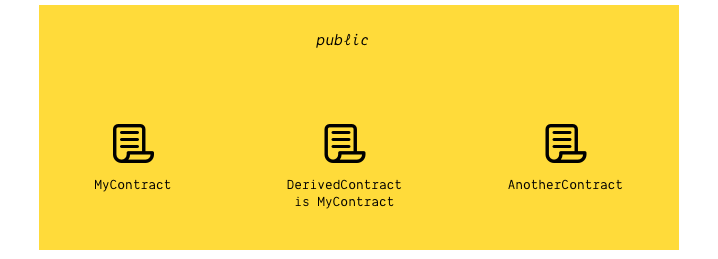

<!doctype html>
<html lang="en">
  <head>
    <meta charset="utf-8">

    <title>Smart Contract Development Essentials</title>

    <meta name="author" content="Dhruvin Parikh">

    <meta name="apple-mobile-web-app-capable" content="yes" />
    <meta name="apple-mobile-web-app-status-bar-style" content="black-translucent" />

    <meta name="viewport" content="width=device-width, initial-scale=1.0, maximum-scale=1.0, user-scalable=no, minimal-ui">

    <link rel="stylesheet" href="../../../reveal.js/css/reveal.css">
    <link rel="stylesheet" href="../../../reveal.js/css/theme/black.css" id="theme">

    <!-- Code syntax highlighting -->
    <link rel="stylesheet" href="../../../reveal.js/lib/css/zenburn.css">

    <!-- Printing and PDF exports -->
    <script>
      var link = document.createElement( 'link' );
      link.rel = 'stylesheet';
      link.type = 'text/css';
      link.href = window.location.search.match( /print-pdf/gi ) ? '../../../reveal.js/css/print/pdf.css' : '../../../reveal.js/css/print/paper.css';
      document.getElementsByTagName( 'head' )[0].appendChild( link );
    </script>

    <!--[if lt IE 9]>
    <script src="../reveal.js/lib/js/html5shiv.js"></script>
    <![endif]-->

    <style>
      .reveal .slides h1, .reveal .slides h2, .reveal .slides h3 {
        text-transform: none;
      }

      .two-column {
        display: flex;
        flex-wrap: wrap;
      }

      .two-column em {
        margin: 20px;
      }

      .reveal .big-and-bold {
        font-weight: bold;
        font-size: 135%;
      }

      .reveal .shrunk-a-bit {
        font-size: 90%;
      }

      .reveal .shrunk-a-bit pre {
        width: 100%;
      }

      .reveal pre {
        width: 100%;
      }

      .reveal .highlight {
        color: yellow;
        font-weight: bold;
      }

      .reveal .highlightRed {
        color: red;
        font-weight: bold;
      }
    </style>
  </head>

  <body>
    <div class="reveal">
      <div class="slides">

<!------------------------------------------------------->


<section data-markdown><script type="text/template">

## BCDV 1010 - Smart Contracts Development Essentials

### Class 2: Introduction to Solidity

*Dhruvin Parikh, November 2021*

</script></section>

<section data-markdown><script type="text/template">
## Class Plan
* Value type - Boolean, Integer, address, fixed size array, contract, functions
* Reference types - arrays and structs
* Mapping types
* Units and globally available variables
* Functions & function modifiers
* Explicit conversion
</script></section>

<section data-markdown><script type="text/template">
  
## Structs
  
```
struct Account {
  uint256 balance;
  uint256 lastUpdatedTimestamp;
}
```
  
  * For grouping together multiple values into a single new type
  * Can contain other structs, mappings, etc
  
</script></section>
  
<section data-markdown><script type="text/template">

## Arrays

<pre class="hljs js">
    <span class="highlight">address[] users;</span>

    function addMyself() public {
        <span class="highlight">users.push</span>(msg.sender);
    }

    function richestUser() public view returns(address) {
        address richest = address(0);
        uint256 richestBalance = 0;

        for (uint256 i = 0; i < <span class="highlight">users.length</span>; i++) {
            if (<span class="highlight">users[i]</span>.balance > richestBalance) {
                richest = <span class="highlight">users[i]</span>;
            }
        }

        return richest;
    }
</pre>

</script></section>
 

<section data-markdown><script type="text/template">

## Mappings
    
<pre class="hljs js">
  <span class="highlight">mapping(address => uint256) balance;</span>
    
  function deposit() public payable {
    <span class="highlight">balance[msg.sender]</span> += msg.value;
  }
</pre>
    
* Like a "dictionary" or "hash-table" in other languages
* Values are `0` by default
* In this example:
  * Look-up an `address`, get a `uint256`
  * Do we need to worry about overflow here?
    
</script></section>
  
  
<section data-markdown><script type="text/template">

  ## Strings
  
  <pre class="hljs js">
      <span class="highlight">string</span> name = <span class="highlight">"Alice"</span>;
  </pre>
  
  * Solidity supports strings, which are arbitrary length arrays of characters
  * Try to avoid using strings, if possible
    * Handling strings in solidity is difficult
    * Long strings cost a lot of gas
    * Better to store a hash of the string
  
</script></section>

<section data-markdown><script type="text/template">

## Time units 
            
* `1 == 1 seconds`
* `1 minutes == 60 seconds`
* `1 hours == 60 minutes`
* `1 days == 24 hours`
* `1 weeks == 7 days`
            
</script></section>

<section data-markdown><script type="text/template">

## Inbuilt variables
    
* There are <a href="https://solidity.readthedocs.io/en/develop/units-and-global-variables.html#special-variables-and-functions" target="_blank">Special variables</a> available, including:
    * `msg.sender` - The address of who called your function (usually who created the transaction)
    * `msg.value` - Amount of wei sent
    * `block.timestamp` - The current time
    * `block.number` - The current block height
</script></section>
  

<section data-markdown><script type="text/template">

  ## Functions
  
  ```
  contract SimpleAdder {
      function addOne(uint256 a) public pure returns(uint256) {
          return a + 1;
      }
  }
  ```
  
  * Functions are as in other languages:
    * Accept parameters
    * Perform computations and actions
    * Optionally can return results
  
</script></section>
  
  
  
  
<section data-markdown><script type="text/template">
  
  ## Function argument and return types
  
  <pre>
      function addOne(<span class="highlight">uint256</span> a) public pure returns(<span class="highlight">uint256</span>)
  </pre>
  
  * Parameters, return values, and variables have types that determine what they can contain
  * *uint256*
    * unsigned (can't be negative)
    * integer
    * 256 bits (32 bytes)
  
</script></section>

<section data-markdown><script type="text/template">

## Control statements in solidity
    
```
// SPDX-License-Identifier: MIT
// The above line tells that source code is licensed under MIT
// specify the solidity version
pragma solidity ^0.6.10;

// The contract declaration starts here
contract MyGBC {
    // declare a function `GBCStudents` that accepts a
    // greeting message
    function greetGBCStudents(string memory _greeting)
        public pure
        returns (string memory)
    {
        // Compares if `_greeting` equals "Welcome".
        // Throws an error and exits if not true.
        if (
            keccak256(abi.encodePacked(_greeting)) ==
            keccak256(abi.encodePacked("Welcome"))
        ) {
            // If it's true, proceed with the function:
            return "Hi!";
        }
        // a way to throw an error on the function call
        revert("Error: greeting is not as expected");
    }
} // Ends here
```
    
</script></section>

<section data-markdown><script type="text/template">

## constructor
  
<pre class="hljs js">
contract MyContract {
  address owner;
  
  <span class="highlight">constructor() public {
      owner = msg.sender;
  }</span>
  
  function doStuff() public {
      require(msg.sender == owner, "only owner can do stuff");
      // do owner stuff
    }
  }
</pre>
  
* Code that is run only once: when contract is created
* Can take arguments, like a regular function
  
</script></section>


<section data-markdown><script type="text/template">
  
## Function return multiple types
  
<pre>
    function addOne(<span class="highlight">uint256</span> a) public pure returns(<span class="highlight">uint256</span>)
</pre>
  
* Parameters, return values, and variables have types that determine what they can contain
* *uint256*
  * unsigned (can't be negative)
  * integer
  * 256 bits (32 bytes)
* A function can return multiple values  
</script></section>
  
  
<section data-markdown><script type="text/template">
  
  ## Function visibility
  
  <pre>
      function addOne(uint256 a) <span class="highlight">public</span> pure returns(uint256)
  </pre>
  
  * Who can call the function
    * *public*: Everyone
    * *private*: Only other functions in this contract
    * *external*: Everyone, except other functions in this contract
    * *internal*: Like *private*, except for inheritance (more later)
  
</script></section>

<section data-markdown><script type="text/template">

## Who can call smart contract function?
        

1. The main contract itself <span class="highlight">(MyContract)</span>
2. A contract derived (i.e. inheriting) from the main contract <span class="highlight">(DerivedContract)</span>
3. A third party <span class="highlight">(AnotherContract)</span>
        
</script></section>


<section data-markdown><script type="text/template">

## Function visibility review

```
contract MyContract {
    function myFunction () [visibility-here] {
        // do something
    }
}
```
* Access restrictions control who can call them:
    * public, private, external, internal
    * Access restrictions are mandatory as of <a href="https://docs.soliditylang.org/en/v0.5.0/050-breaking-changes.html#explicitness-requirements" target="_blank">v0.5.0</a>
* Storage restrictions control what the function can do:
    * pure, view, (none)
</script></section>


<section data-markdown><script type="text/template">

## `private` function
    


* Can only be called by the `MyContract` itself. 
* Keep functions `private` unless a scope with more visibility is needed.
                
</script></section>


<section data-markdown><script type="text/template">

## `internal` function
        

    
* Can be called by the `MyContract` + derived contracts.

</script></section>


<section data-markdown><script type="text/template">

## `external` function
            

          
* It cannot be called from the MyContract + derived contracts; only by third party
* More performant as thier arguments do not need to be copied to memory.
          
</script></section>


<section data-markdown><script type="text/template">

## `public` function
                    

                  
* Can be called from all potential parties.
                  
</script></section>  

  
<section data-markdown><script type="text/template">
  
  ## Function state mutability specifiers
  
  <pre>
      function addOne(uint256 a) public <span class="highlight">pure</span> returns(uint256)
  </pre>
  
  * Contracts have a persistent memory called storage (or sometimes state)
  * This will preserve values between transactions
    * *pure*: Doesn't read or write to storage
    * *view*: Reads from storage, but does not write
    * None: Reads and writes to storage
  
</script></section>

<section data-markdown><script type="text/template">
  
## `view` and `pure` functions
                        
* Getter functions can be declared `view` or `pure`.
* View function declares that no state will be changed.
* Pure function declares that no state variable will be changed or read.
                      
</script></section>

<section data-markdown><script type="text/template">
  
  ## Explicit conversions
  
  ```
  uint8 a = 5;
  uint b = 6;
  // throws an error because a * b returns a uint, not uint8:
  uint8 c = a * b; 
  // we have to typecast b as a uint8 to make it work:
  uint8 c = a * uint8(b);
  ```
  
  * Conversion from one type to another is possible in solidity
  
</script></section>

<section data-markdown><script type="text/template">
## Error handling
* `require(condition,<string>)`
* `assert()`
* `revert(<string>)`
* Custom errors ([starting Solidity v0.8.4](https://blog.soliditylang.org/2021/04/21/custom-errors/))
* `try/catch` (later on)
</script></section>

<section data-markdown><script type="text/template">

## require
  
```
function addOne(uint256 a) public pure returns(uint256) {
  require(a + 1 > a, "sorry, a is too big");
  return a + 1;
}
```
  
* When you want to check user input is valid
* If first argument evaluates to false, entire transaction is aborted
* Second argument is a user-friendly description of problem
  
</script></section>
  
  
  
<section data-markdown><script type="text/template">
  
## assert
  
```
function addOne(uint256 a) public pure returns(uint256) {
  require(a + 1 > a, "sorry, a is too big");
  uint256 output = a + 1;
  assert(output != 0); // 0 should be impossible
  return output;
}
```
  
* When you are sure something is true, but want to put in a check **just in case you are wrong**
* Don't use it for validating user input (use `require`)
* `assert` is used by special programs that analyze your code so they can prove things about it
  * And no user-friendly message
  
</script></section>  

<section data-markdown><script type="text/template">

## Custom modifiers
    
<pre class="hljs js">
    <span class="highlight">modifier onlyOwner() {
        require(msg.sender == owner);
        _;
    }</span>
    
    function doStuff() public <span class="highlight">onlyOwner</span> {
        // do owner stuff
    }
</pre>
    
* Wraps a function with some custom code
* The `_;` is replaced with the function body (in this case, `doStuff`'s body)
    
</script></section>
  
<section data-markdown><script type="text/template">

## End of Class

</script></section>


<!------------------------------------------------------->


      </div>

    </div>

    <script src="../../../reveal.js/lib/js/head.min.js"></script>
    <script src="../../../reveal.js/js/reveal.js"></script>
    <script src="../../../reveal.js/plugin/zoom-js/zoom.js"></script>

    <script>

      // Full list of configuration options available at:
      // https://github.com/hakimel/reveal.js#configuration
      Reveal.initialize({
        controls: true,
        progress: true,
        history: true,
        center: true,

        transition: 'none', // none/fade/slide/convex/concave/zoom

	math: {
          mathjax: '../../../lib/MathJax/MathJax.js',
          config: 'TeX-AMS_SVG-full',
	},

        // Optional reveal.js plugins
        dependencies: [
          { src: '../../../reveal.js/plugin/markdown/marked.js', condition: function() { return !!document.querySelector( '[data-markdown]' ); } },
          { src: '../../../reveal.js/plugin/markdown/markdown.js', condition: function() { return !!document.querySelector( '[data-markdown]' ); } },
          { src: '../../../reveal.js/plugin/highlight/highlight.js', async: true, callback: function() { hljs.initHighlightingOnLoad(); } },
          { src: '../../../reveal.js/plugin/math/math.js', async: true }
        ]
      });

    </script>

  </body>
</html>